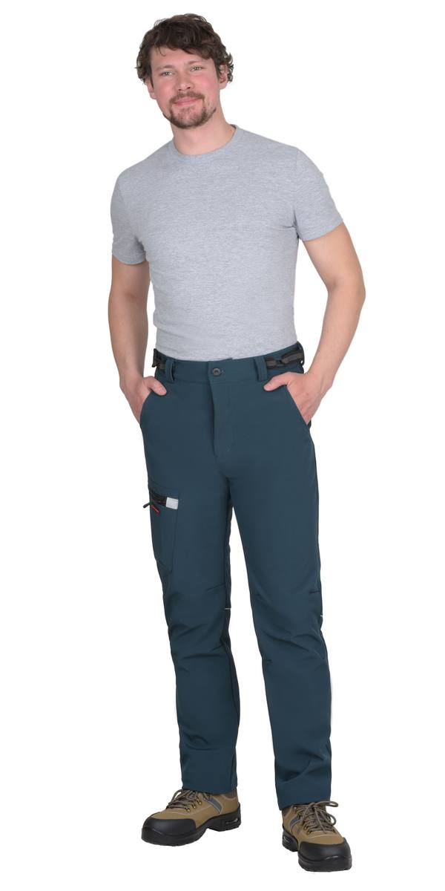
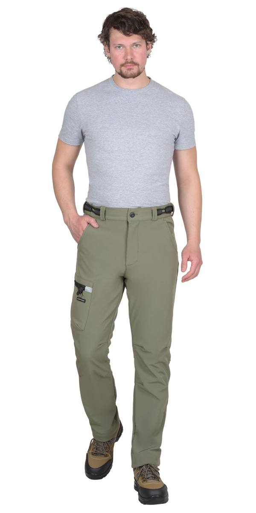
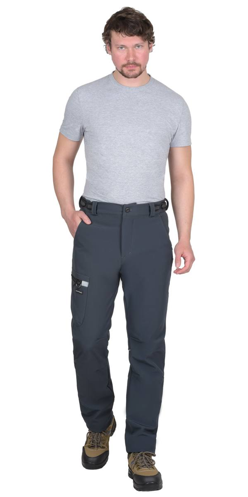
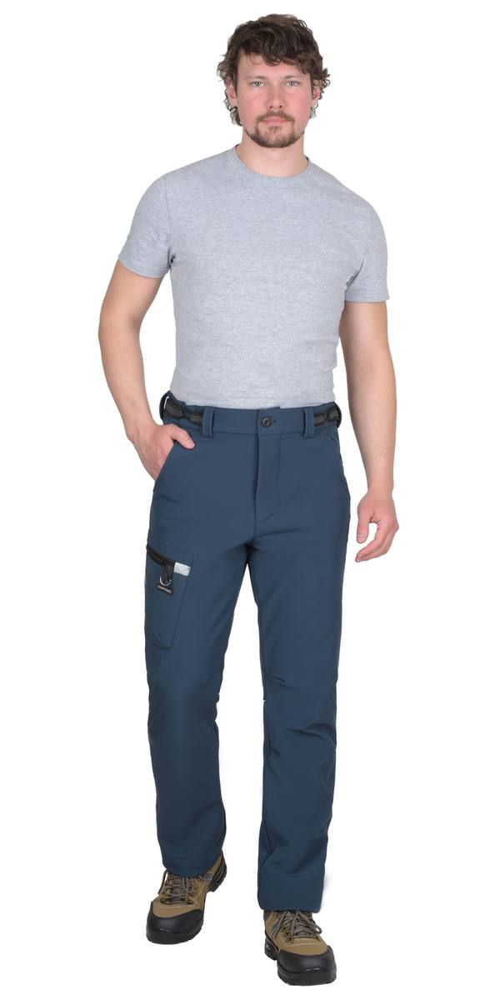
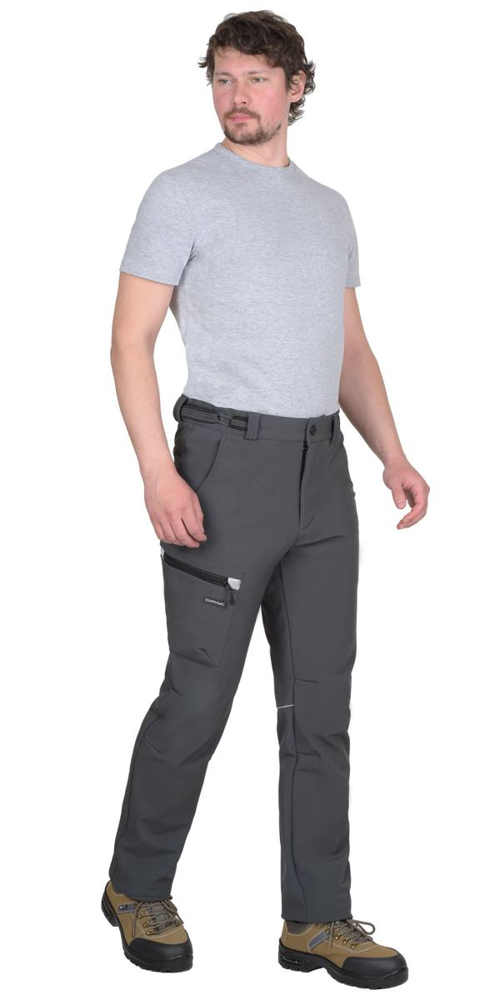

Брюки «Спейс»
Арт. 160755 — Брюки КМФ Урбан софтшелл 325 ТА (ЧЗ)
Брюки КМФ Урбан софтшелл 325 ТА (ЧЗ)

Брюки софтшелл 325 морская волна ТА (ЧЗ)
Брюки софтшелл 325 олива ТА (ЧЗ)
Брюки софтшелл 325 сине-серые ТА (ЧЗ)
Брюки софтшелл 325 синие ТА (ЧЗ)
Брюки софтшелл 325 т.серые ТА (ЧЗ)ГОСТ 25295-2003/ ГОСТ 12.4.280-2014
ТР ТС 017/2011/ ТР ТС 019/2011
Брюки прямого кроя с застежкой на молнию - гульфик, с отрезным поясом, внутренними боковыми карманами и накладными карманами на боковых швах с застежкой на молнию, отрезной кокеткой сзади.
Материал основой: софтшелл с мембраной, с ВО, плотность 325 г/м², состав 92% ПЭ, 8% СП, цвет: КМФ Урбан.
Материал отделки: ткань полиэфирная, с ВО, плотность 95 г/м², состав 100% ПЭ, цвет: чёрный.
Материал подкладки: ткань смесовая, с ВО, состав: 65% ПЭ,35% ХБ, плотность 120 г/м2, цвет: чёрный.
| Артикул | Вариант / цвет |
|---|
| 160755 | Брюки КМФ Урбан софтшелл 325 ТА (ЧЗ) |
| 132313 | Брюки софтшелл 325 морская волна ТА (ЧЗ) |
| 132314 | Брюки софтшелл 325 олива ТА (ЧЗ) |
| 132315 | Брюки софтшелл 325 сине-серые ТА (ЧЗ) |
| 132316 | Брюки софтшелл 325 синие ТА (ЧЗ) |
| 132317 | Брюки софтшелл 325 т.серые ТА (ЧЗ) |